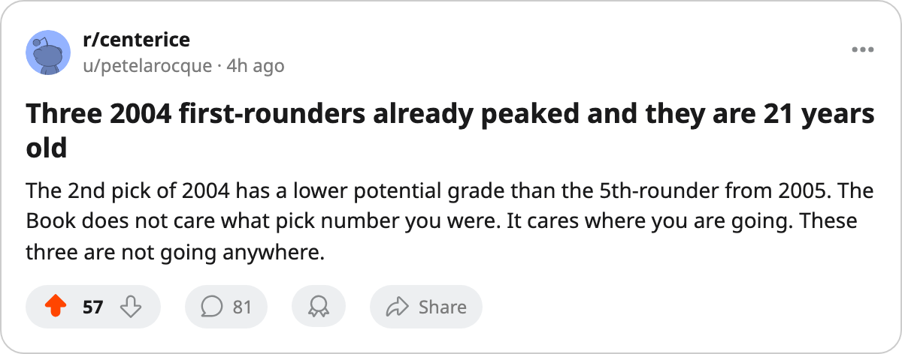

NSH
NSH CGY
CGY STL
STLThree First-Rounders From 2004 Have Potential Grades Below Their Own Current Grade
Tuomas Lydman, Tuomo Pihlman and Kristian Timander. Ages 20 and 21. The Book says their best is behind them.
 Pete LarocqueScouting editor · The Prospect File
Pete LarocqueScouting editor · The Prospect FileThe Bureau's potential grade measures likelihood of development. A 90 means the player is almost certain to improve. A 52 means the odds are against him. When a player's potential falls below his own current overall, the Book is saying something blunt: this man has already produced more than the Bureau expects him to sustain.
Three first-rounders from the 2004 draft are in that position.
| player | pick | overall | form | base | potential | age | team |
|---|---|---|---|---|---|---|---|
| Tuomas Lydman73 [1001012] | 2004 #10 | 77 | +3 | 74 | 52 | 21 | ANA |
| Tuomo Pihlman76 [1001038] | 2004 #9 | 78 | +4 | 74 | 56 | 21 | MIN |
| Kristian Timander72 [1001045] | 2004 #2 | 76 | +3 | 73 | 66 | 21 | DAL |
Lydman's potential of 52 is the lowest of the three and the lowest of any player in the U-23 group who has played at least 3 games. His base is 74. The Bureau puts his ceiling at 52 likelihood. He has 2 points in 6 games for  Mighty Ducks of Anaheim at 24.8 minutes a night.
Mighty Ducks of Anaheim at 24.8 minutes a night.
The Calder winner with a 56
Pihlman won the Calder Trophy last season with  Minnesota Wild. He is the reigning rookie of the year and carries a 56 potential grade. His base is 74, his current overall is 78. The Bureau looked at the Calder winner, six months after his trophy, and concluded the most likely version of Tuomo Pihlman is worse than the one who won it.
Minnesota Wild. He is the reigning rookie of the year and carries a 56 potential grade. His base is 74, his current overall is 78. The Bureau looked at the Calder winner, six months after his trophy, and concluded the most likely version of Tuomo Pihlman is worse than the one who won it.
He has 3 points in 3 games so far this season, at 14.3 minutes a night. That is a smaller role than a first-rounder with a Calder should expect. The Minnesota development group either trusts him in a limited role or is testing whether the 56 grade holds.
The 2nd pick who grades like a 5th
Timander went 2nd overall in 2004. His potential is 66. For comparison, the 12th pick that same year, Roger Nylander74 [1001056], carries a 94 potential. The 19th pick, Andreas Stahle76 [1001028], has a 96. The 1st pick, Vaclav Spacek81 [1001015], carries 91.
Three selections after Timander have potential grades 25 to 30 points above his. He is 21, with 3 points in 7 games for  Dallas Stars. His 66 is not catastrophic, but it is low enough that a club hesitates before giving a top-10 asset to a player the Bureau rates as likely to stagnate.
Dallas Stars. His 66 is not catastrophic, but it is low enough that a club hesitates before giving a top-10 asset to a player the Bureau rates as likely to stagnate.
What the class of 2004 looks like at the top
Strip away the three with low potentials and the rest of the 2004 first round shows a split. Spacek (91), Nylander (94) and Stahle (96) all carry the kind of grades a top-3 player deserves. The class has players with a real future.
But the 2nd, 9th and 10th picks were supposed to be part of that group. They are not. Their current grade sits above what the Bureau projects for their peak, and at 21 that is a hard thing to write in a draft file.
The rookies right behind them
The 2005 class has its own version. Karel Hemsky77 [1001106] went 54th overall and grades 78 right now. His potential is 64. Fredrik Sillanpaa77 [1001079] went 122nd and grades 79. His potential is 56. Josh Junker74 [1001121] went 62nd, grades 76, potential 57.
They have played 0 games. The Bureau has already graded them and concluded they are finished products. Whether that is a scouting read on a late-bloomer class or simply a harsh book, the 2005 draft has three men who cannot wait for their development to arrive because the Bureau says it already left.
